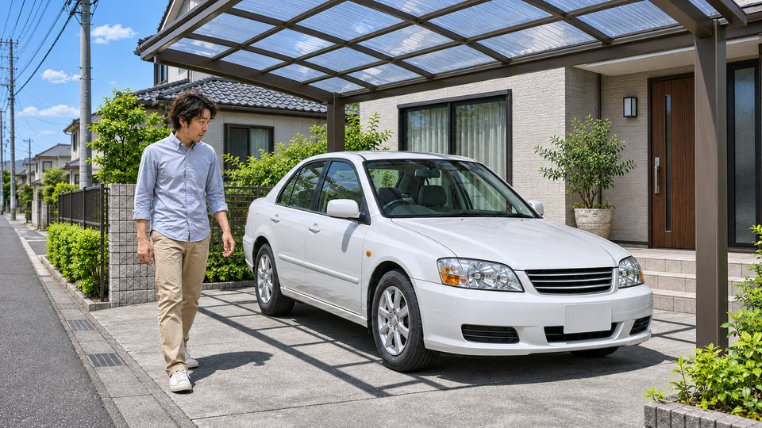
画面 自宅の駐車場。持ち主が自分の白いセダンを見て、ふと足を止める（晴れた昼の住宅街・青空・背景くっきり）
セリフ・音 （持ち主）あ…
12カット・15秒・16:9。屋外は晴れた昼の青空（2026-11-23 夕方→青空に変更）。社内確認用（未承認・公開しない）。スマホ画面・着信表示・メーターの文字は後から合成（サイト名は架空）。声・動き・口合わせはこのあと。

画面 自宅の駐車場。持ち主が自分の白いセダンを見て、ふと足を止める（晴れた昼の住宅街・青空・背景くっきり）
セリフ・音 （持ち主）あ…
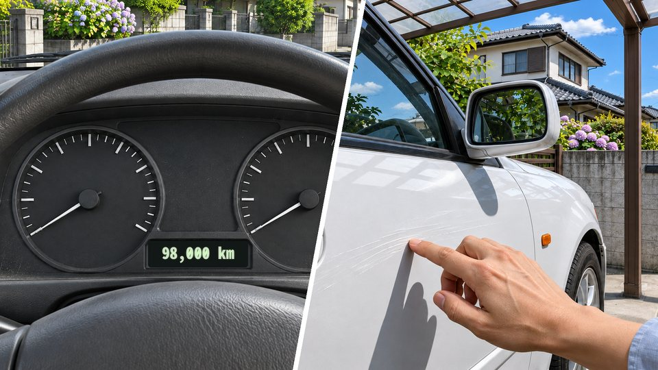
画面 寄り：メーター「98,000km」＋ドアの小さなこすり傷（1枚に左右で）
セリフ・音 （効果音）ピッ
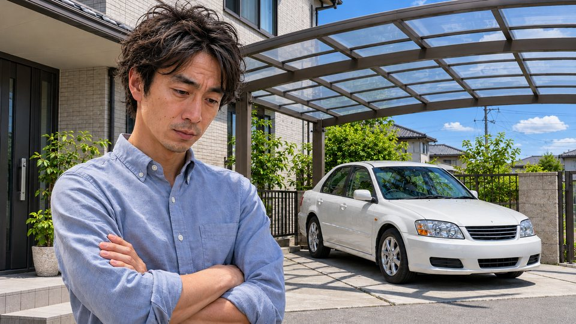
画面 持ち主の顔の寄り。腕を組んで
セリフ・音 （持ち主）そろそろ買い替え時かぁ
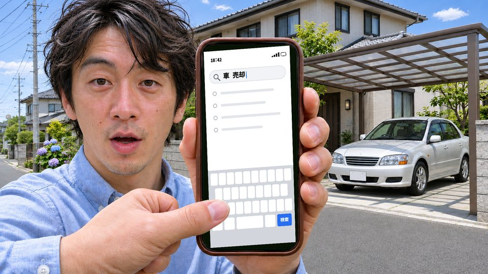
画面 スマホの寄り。検索窓に「車 売却」と打って検索
セリフ・音 （タイピング音）
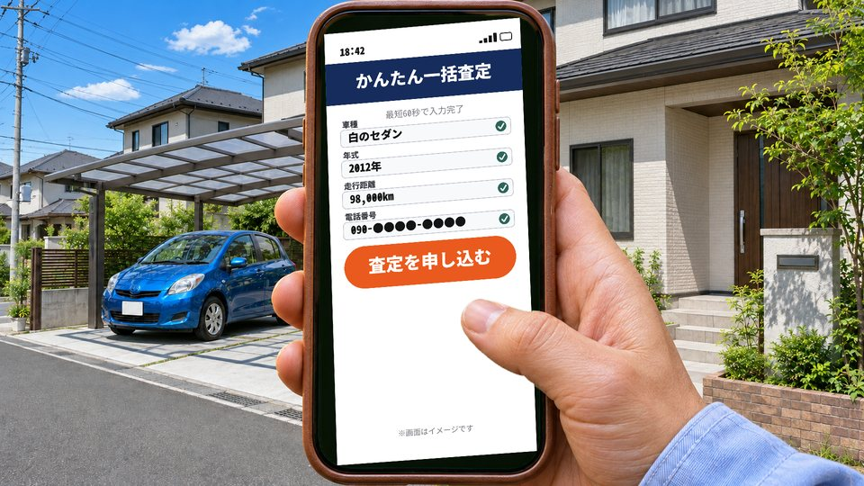
画面 架空サイト「かんたん一括査定」に車種・年式・電話番号を入力済み。親指が「査定を申し込む」へ
セリフ・音 —
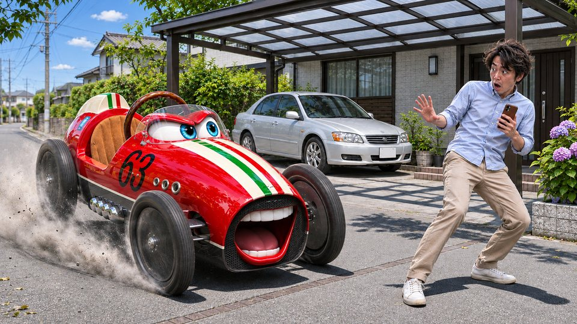
画面 押す直前、画面の横から赤い車がドーン！ 持ち主がのけぞる
セリフ・音 （車）ちょっと待ったー！
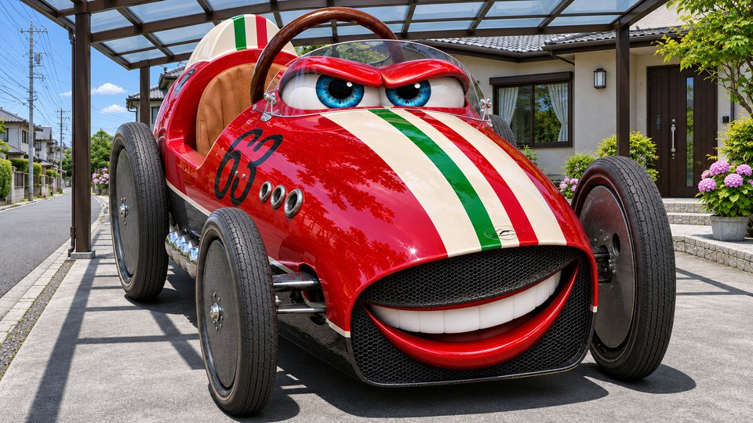
画面 赤い車の寄り。ニヤッと
セリフ・音 （車）それ、電話めっちゃ来るよ？
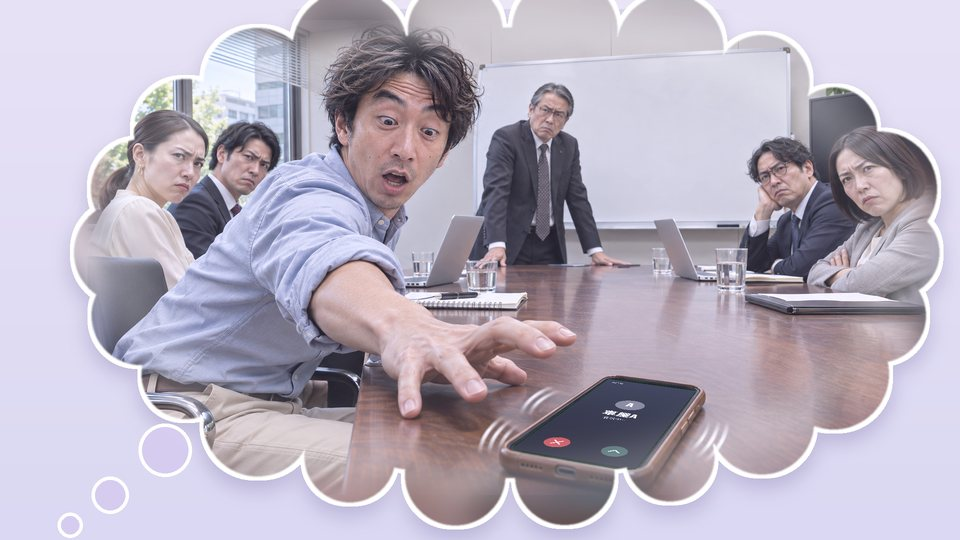
画面 ポワポワ（想像の吹き出し）：会議中、持ち主のスマホに「車屋A」から着信。周りがこっちを見る
セリフ・音 （着信音）プルルル
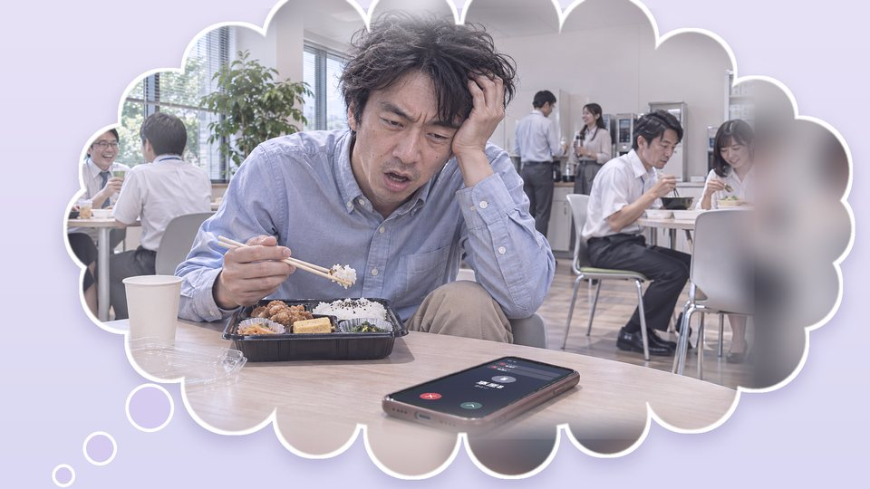
画面 ポワポワ：昼休みも「車屋B」「車屋C」…着信が鳴り止まず、げんなり
セリフ・音 （着信音が重なる）
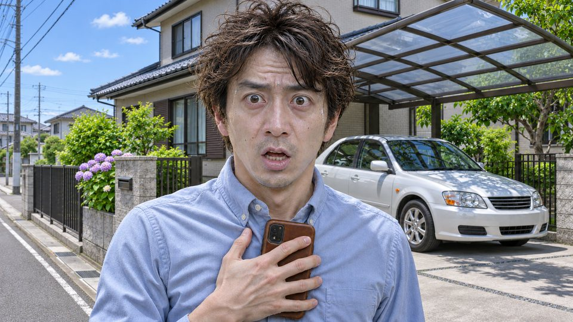
画面 現実に戻る。持ち主の顔の寄り、青ざめて
セリフ・音 （持ち主）…マジで？
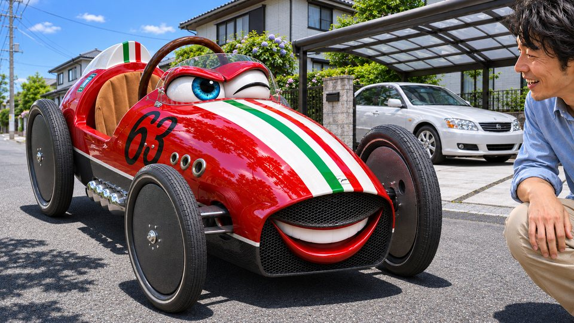
画面 赤い車がウインク
セリフ・音 （車）おすすめのとこ、教えてあげる！
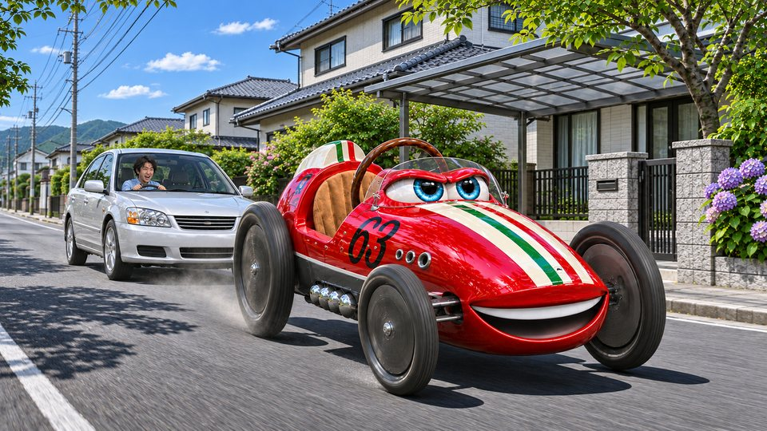
画面 赤い車が発進、持ち主が自分の車で追いかける（→今のS07へつなぐ）
セリフ・音 （車）ついてきて！